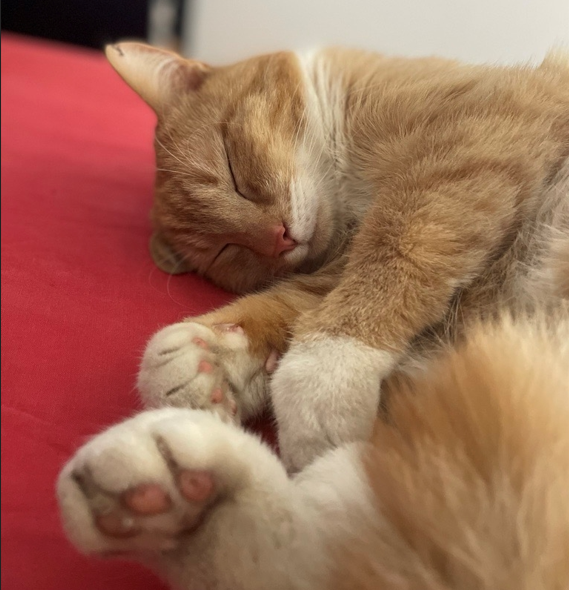

Ik ben Kevin Werleman, ik ben 16 jaar oud. Ik leef met mijn vader, moeder, zusje, hond, en kat


Ik ben Kevin Werleman, ik ben 16 jaar oud. Ik leef met mijn vader, moeder, zusje, hond, en kat
Mijn hobby is voornamelijk gamen. Ik speel games op mijn Xbox, waar ik meestal van één player games geniet.
Dit zijn een paar van mijn favoriete of recent gespeelde games:
| Dark Souls 1/3 | Titanfall | Portal 2 | |
|---|---|---|---|
Ik heb een best makelijke en faste weekend leef patroon het gaat als volgt